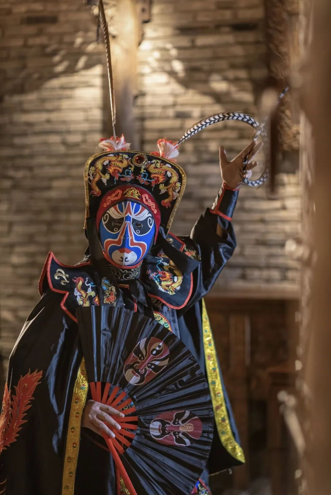
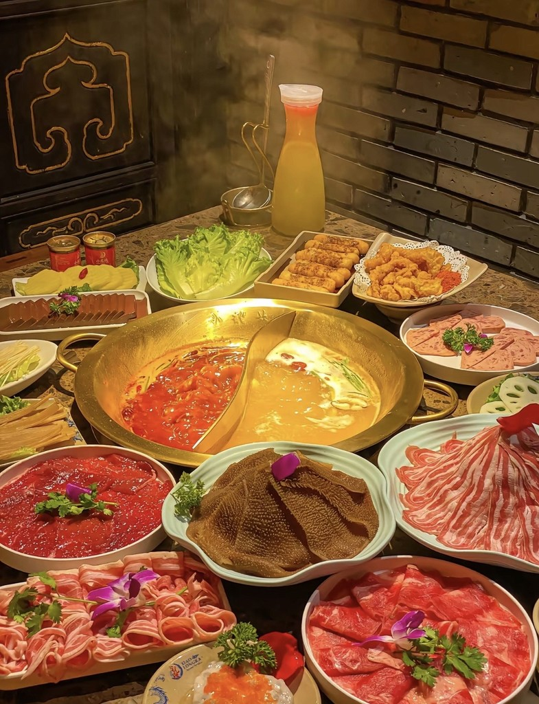
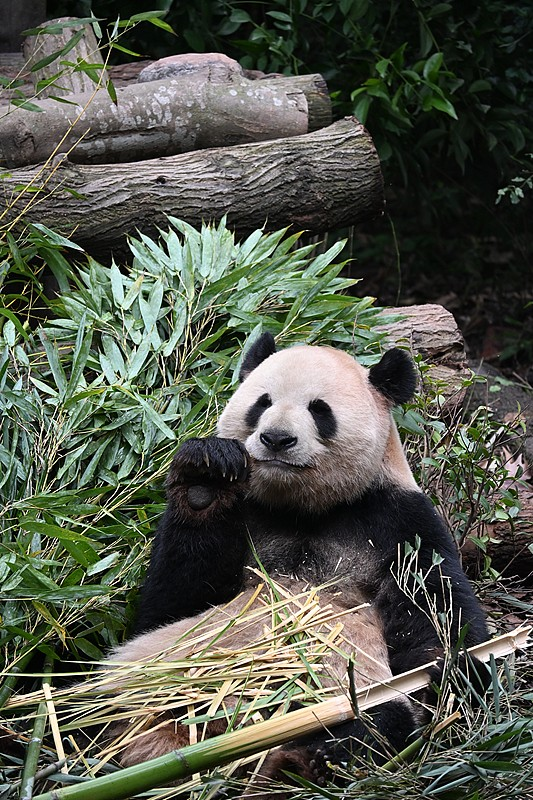
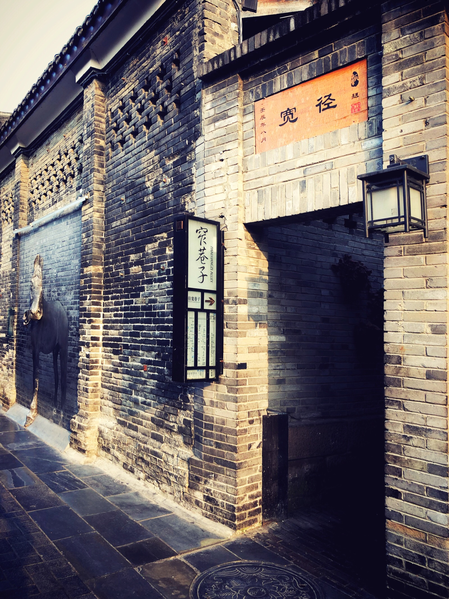
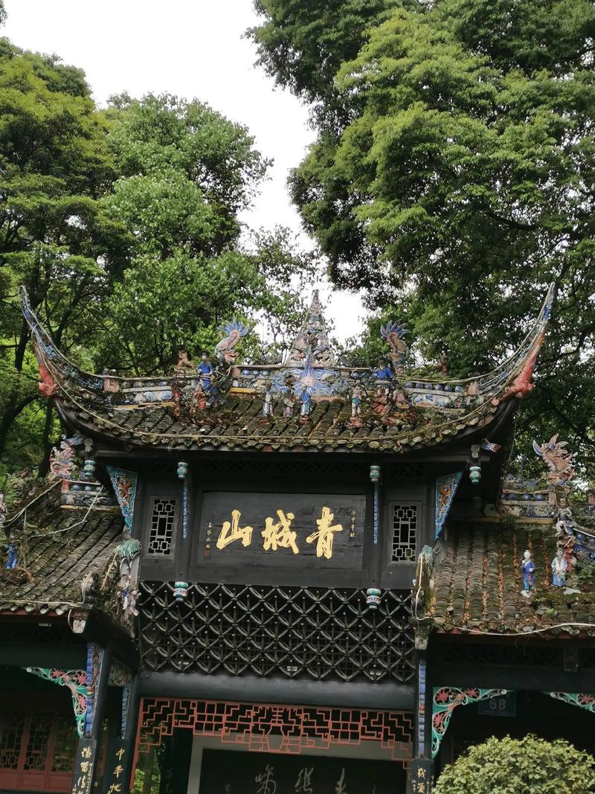
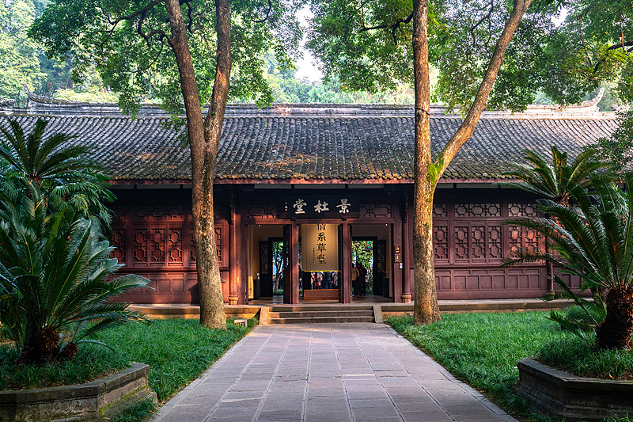
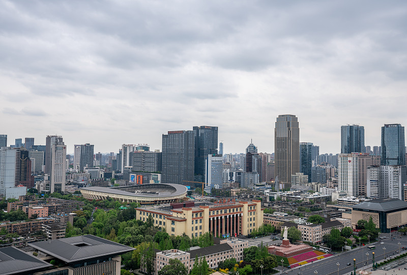

成都位于中国西南部、四川盆地西部，古称“锦官城”，因蜀锦、蜀绣而名，素有“天府之国”的美誉。
这里是川菜与火锅的故乡，是大熊猫的家园，也是中国首批国家历史文化名城。水旱从人、不知饥馑的都江堰滋润了两千余年；今天的成都，既是慢生活的样本，也是西南经济与文化的中心——连续多年位居新一线城市之首。
提到成都，你会想到什么？这些关键词，拼出这座城市的体温。
大熊猫繁育研究基地，圆滚滚的国宝在这里卖萌、吃竹、打滚。
一锅红汤，滚烫人间；夜晚十点的成都，火锅依然翻涌。
人民公园的鹤鸣茶社，一碗盖碗茶，就是一下午的巴适。
一张脸，千般戏；喷火、变脸，是川剧舞台上的绝活。
不慌不忙、安逸闲适，成都节奏教人把日子过成诗。
宽窄巷子、玉林路的小酒馆，烟火气藏在每一条街巷。
三千年城名未改、城址未迁，成都把历史酿成了日常。

蜀地自古人文荟萃：川剧的变脸与吐火惊艳舞台，被列入国家级非物质文化遗产；街头巷尾的盖碗茶、长嘴壶，是成都人最松弛的社交方式。
汉时蜀锦名扬天下，故称“锦官城”；诗圣杜甫在浣花溪畔写下“晓看红湿处，花重锦官城”；金沙遗址的太阳神鸟，把成都的记忆拉回三千年前。
麻、辣、鲜、香，成都把“吃”变成了一种生活方式。
川菜百味，一菜一格、百菜百味。成都火锅以牛油、花椒、辣椒熬出醇厚红汤，毛肚、黄喉、鸭肠在沸汤里七上八下，是这座城市的社交底色。
街头巷尾，还有数不清的小吃与面食，从清晨到凌晨，总有一口热乎的等着你。

人文古迹、山水清幽、都市霓虹，成都处处是风景。

圆滚滚的国宝家园

老成都的市井记忆
红灯笼下的三国与烟火

千年水利与“青城天下幽”

诗圣浣花溪畔的草堂

现代成都的会客厅
一镜到底，看遍成都的山水、市井与烟火。